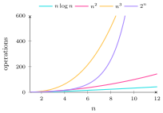

Definition
Equivalently, when the limit exists, . Two kinds:
- time complexity: elementary steps (additions, comparisons, jumps);
- space complexity: memory locations (bits, words).
Classes, from slow to fast growth:  ,
,  ,
,  , ,
, ,  , polynomial, , exponential.
, polynomial, , exponential.
Derivation
Count operations through the algorithm. Shifting every component of a circuit by one position is one operation each:  operations, and doubling doubles the time. Comparing every pair of components is : doubling quadruples the time, tripling it multiplies by nine. Trying every subset of gates is
operations, and doubling doubles the time. Comparing every pair of components is : doubling quadruples the time, tripling it multiplies by nine. Trying every subset of gates is  : adding one gate doubles the time. Rules: along a sequence, for nested loops, constants disappear: .
: adding one gate doubles the time. Rules: along a sequence, for nested loops, constants disappear: .
Picture

algorithms versus input size : the exponential overtakes every polynomial.
For small the constants matter; for large only the class does.
Intuition
Big-O answers "what happens if the circuit is ten times bigger?". Design tools must handle millions of gates, so only near-linear algorithms survive on full chips.
Pitfall
 is an upper bound and hides constants: an method with a tiny constant can beat an one at the sizes that matter. Worst case and average case can differ widely.
is an upper bound and hides constants: an method with a tiny constant can beat an one at the sizes that matter. Worst case and average case can differ widely.